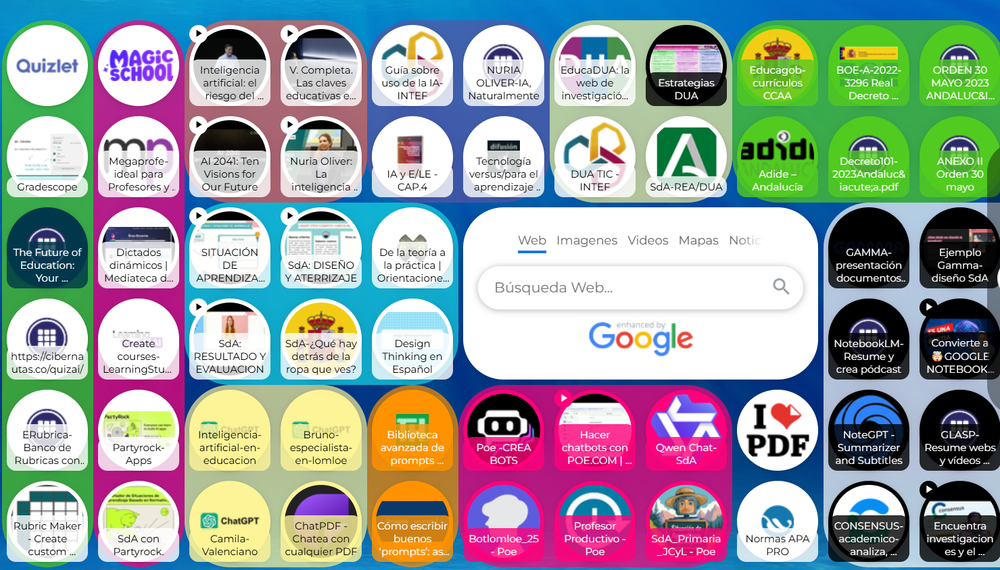

INTRODUCCIÓN AL MÓDULO: CURACIÓN DE CONTENIDOS
La curación de contenidos es un paso esencial en nuestro proceso de diseño de SdA. La abundancia de información disponible en la red exige seleccionar, organizar y presentar recursos de calidad que realmente aporten valor al proceso de enseñanza–aprendizaje.
Para facilitar esta tarea, se integra en este proyecto un Symbaloo específico para el profesorado, donde encontrarás una selección cuidada de herramientas, lecturas, recursos y materiales de apoyo que te permitirán profundizar en cada fase del proyecto y enriquecer tu práctica docente. Utiliza el enlace anterior para acceder al contenido.

Paralelamente, el alumnado contará con un Padlet diseñado como guía de acompañamiento, que reúne todos los recursos necesarios para avanzar de forma autónoma y estructurada a lo largo del proyecto. Este espacio visual y accesible les permitirá consultar instrucciones, materiales y actividades en cada momento, favoreciendo un aprendizaje más activo, organizado y significativo.
A través de esta doble curación —una orientada al profesorado y otra al alumnado— se busca crear un espacio de recursos coherente, actualizado y funcional, que facilite la implementación del proyecto y potencie la experiencia educativa de todos los participantes.